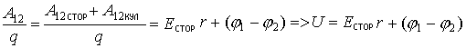
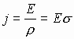
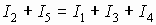
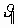
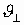

2. ПОСТОЯННЫЙ ЭЛЕКТРИЧЕСКИЙ ТОК
2.1. Плотность тока носителей заряда разных знаков2.2. ЭДС. Источник тока. Напряжение
2.3. Законы Ома в интегральной форме
2.3.1. Закон Ома в дифференциальной форме
2.4. Закон Джоуля-Ленца
2.5. Законы Кирхгофа
2.6. Эмиссия электронов с поверхности
2.6.1. Работа выхода
2.6.2. Способы выбивания электронов с поверхности
2.6.3. Электрический ток в вакууме
2.7. Заряженная частица в плоском конденсаторе
2. Постоянный электрический ток
Электрический ток - направленное движение зарядов.
Направление тока - направление движения "+" зарядов. Так исторически принято, хотя основными носителями заряда в подавляющем большинстве случаев являются электроны, т.е. отрицательно заряженные частицы.
Условия возникновения электрического тока:
1. наличие свободных носителей электрических зарядов.
2. электрическое поле (внешнее).
Характеристики электрического поля:
Сила тока - количество заряда, протекающего по проводнику в единицу времени. Для постоянного тока:
.
Если количество заряда меняется со временем, то:
.
Плотность тока - численно равна величине тока, протекающего через единичную площадку, расположенную перпендикулярно направлению движения заряда.
.
Если сила тока величина скалярная, то плотность тока – вектор, направленный вдоль нормали к поверхности, через которую протекает заряд. Если поперечное сечение проводника, по которому протекает ток, неоднородно, тогда плотность тока в разных частях проводника выражается дифференцированием, т.е. величина силы тока есть поток векторов j, через поперечное сечение проводника (см. т.Гаусса).
 - самостоятельного наименования не имеет.
- самостоятельного наименования не имеет.
Электропроводность - физическая величина, количественно характеризующая способность тела пропускать электрический ток под действием электрического поля (- электропроводность).
Величина, обратная электропроводности, называется сопротивлением.
.
Сопротивление протеканию тока есть величина, характеризующаяся структурными и химическими особенностями среды, по которой протекает заряд. Структурные особенности - взаимное расположение атомов в проводнике, химическая особенность - разного рода молекулярная связь атомов и молекул вещества.
Эти особенности, как правило табличные, и называются удельным сопротивлением - сопротивлением проводника протеканию электрического тока телом с геометрическим размером ~1м3:
Поскольку сопротивление определяется особенностями строения проводника, то температура окружающей среды, искажающая состояние структуры химических связей атомов вещества, оказывает решающее влияние на это сопротивление. Из общих соображений можно сказать, что повышение температуры повышает сопротивление. Rt=Ro+(1+a t) Изменение температуры на десятки градусов изменяет сопротивление на несколько процентов, на сотни градусов - на десятки процентов. (α ~ 10-3 К-1). В общем случае для разных типов носителей заряда: Аналогичное математическое рассмотрение можно провести, как для “+” так и для “-” зарядов. Предполагается, что “+” и “-” заряды при протекании не взаимодействуют друг с другом, тогда общие потоки зарядов движутся навстречу друг другу и результирующий поток равен: , если . Здесь скорости положительных (+) и отрицательных (-) зарядов, которые, как правило, не одинаковы. Итак, плотность потока зарядов противоположного знака численно равна сумме плотностей потоков отдельных зарядов Чтобы в проводнике протекал постоянный электрический ток: 1) подают на один конец заряды, а на другом их снимают; и 2) нужны некоторые силы, чтобы заряд перемещался, т.е. нужны силы неэлектрического происхождения, их называют сторонние силы. Сторонние силы не должны быть электрическими, а должны быть химическими, ядерными, механическими и т.д. для совершения работы по перемещению заряда по участку цепи. Участок цепи, в который включается источник сторонних сил обозначается двумя перпендикулярными линиями: тонкая длинная - источник "+" зарядов, толстая короткая - источник "-" . Устройство, в котором возникают сторонние силы, называются источником тока. Если потенциалы φ1, φ2 в точках 1 и 2 создаются так же электрическими силами, тогда полная сила, вынуждающая заряды двигаться, F=Fстор+FK , а работа по перемещению заряда из точки (1) в точку (2) А12=Fr, если ток протекает в цепи постоянный: А12=Fr=Fстор · r+FK· r =Eстор·qr+Eкул·qr Введем понятие силовой характеристики сторонних сил, заставляющих заряды q двигаться, такое как, напряженность поля сторонних сил, тогда: Fстор =Eстор·q Зная связь между напряженностью и разностью потенциалов, можем записать, что: Тогда полная работа: А12=Eстор·qr + (φ1-φ2 )·q. Разделив это уравнение на величину переносимого заряда q, получим: . Это напряжение, получаемое на концах участка цепи 1-2, содержащего сторонние силы. Согласно определению силовой характеристики сторонних сил можно записать: - есть электродвижущая сила источника сторонних сил. ЭДС (e) - электродвижущая сила источника сторонних сил; тогда выражение напряжения на концах участка цепи, содержащего сторонние силы, численно определяется с “+” , если э.д.с. помогает протеканию тока; и с “-” , если э.д.с. препятствует протеканию тока. Закон Ома в интегральной форме подразумевает, что рассматривается полный ток, протекающий в цепи и величина тока со временем не меняется. Очевидно, что количество заряда, протекающее по проводнику, обратно пропорционально сопротивлению проводника. Количество заряда протекающее в проводнике, прямо пропорционально напряженности или разности потенциалов, создающих внешнее электрическое поле. 1) Суммарное сопротивление проводников и элементов цепи без э.д.с. обозначается на схеме. 2) Если участок цепи включает в себя э.д.с, то собственное сопротивление источника тока выделяется и обозначается r. Тогда закон Ома для участка цепи, содержащей э.д.с., будет иметь вид: . 3) Если замкнутый участок цепи, содержит э.д.с., тогда φ1 = φ2, и получаем: - закон Ома для замкнутого участка цепи, содержащего э.д.с. В целом участок цепи, содержащей множество э.д.с. и разных деталей представлен законом Ома в виде: Если при напряжении на концах участка цепи в 1В по цепи протекает ток в 1А, то говорят, что сопротивление цепи равно одному Ому. Из закона Ома следует: . Сечение проводника или элементов цепи, как правило, неоднородно, и сопротивляемость в разных участках цепи протеканию тока также различная. Тогда разбивают участки цепи на элементы (дифференцируют) и определяют закон Ома в каждом отдельном участке. Учитывая, что для участка цепи и , получим . Это закон Ома в дифференциальной форме. Зная, что удельная электропроводность σ и удельное сопротивление ρ связаны, как: σ - удельная электропроводность, ρ - удельная сопротивление,  - закон Ома в дифференциальной форме. Закон Джоуля - Ленца касается закона сохранения энергии; если считать, что система электрической цепи замкнутая, то работа по перемещению заряда в проводнике, если сам проводник не перемещается в пространстве, полностью преобразуется в тепловую энергию Q на участке (1-2). Q=IU· t (1) (3) Вид формулы для Q определяется условием задачи по определению выделившегося тепла. Формулы (1), (2), (3) есть закон Джоуля-Ленца в интегральной форме (определение полного тепла, выделившегося в цепи за все время протекания тока). Тепловая мощность тока. Для определения количества теплоты, выделившегося в единицу времени, вводят понятие тепловой мощности тока: . Единицей мощности тока считают 1Вт=1Дж/1с. Если электрическая цепь состоит из элементов различного сопротивления и геометрии, то цепь разбивают на отдельные участки и определяют закон Джоуля - Ленца для каждого участка. Последовательно расписывая Из закона Ома в дифференциальной форме следует: , т.к. . I Закон Кирхгофа - закон токов (для узлов цепей). В участке электрических цепей очень часто содержатся узлы, в которых сходятся множество элементов, проводящих ток. Если цепь работающая, то по разным участкам будут протекать различные токи. По закону сохранения заряда, как материального объекта, можно предположить, что количество заряда, приходящего в узел, должно быть численно равно количеству заряда, выходящего из узла: , т.е. по определению  Окончательно имеем: Сумма электрических токов, сходящихся в узле работающих цепей, всегда равна нулю. II Закон Кирхгофа - закон напряжений (закон замкнутых цепей). Величина электрического тока в последовательных цепях есть величина постоянная и по закону сохранения заряда . . Окончательно получаем . В любом замкнутом контуре сумма падений напряжений на всех участках цепи равна алгебраической сумме э.д.с., включенных в цепь. Так как любое вещество имеет в своем объеме свободные электроны, то любое внешнее электрическое воздействие на вещество может привести к отрыву электронов с поверхности вещества (эмиссия). Итак, для того, чтобы удалить электрон с поверхности вещества, требуется совершить работу. Принципиально свободные электроны могут испускаться поверхностями любых веществ, где есть граница раздела (воздух-вода, дерево-вакуум). Но наибольшее количество испускаемых электронов наблюдается у металлов в связи с наибольшим количеством свободных электронов у этого класса веществ. Эмиссия электронов характеризуется работой выхода - минимальной энергией, которую необходимо затратить для удаления электрона с поверхности твердого или жидкого вещества в вакуум. Энергетический разрыв между энергиями электронов в атоме и энергиями электронов в свободном состоянии (в кристалле) называется энергией отрыва электрона от атома. Значит энергетическое состояние свободного электрона больше, чем энергия электрона в атоме. Точно также для отрыва свободного электрона с поверхности вещества требуется совершить работу. Значит, энергетическое состояние электрона вне вещества выше, чем энергия электрона в кристалле. Для чистых веществ работа выхода зависит только от особенностей атома вещества и взаимосвязей атомов между собой. Для разных веществ Авых не превышает нескольких эВ, например: Металл Pt W Mo Fe Mg Na Авых (эВ) 5,29 4,5 4,27 4,36 3,45 2,27 Фотоэлектронная эмиссия - выбивание электронов с поверхности под действием электромагнитного излучения (свет - это часть диапазона электромагнитных волн). И - источник электромагнитных волн (света). а) окошко для света закрыто, тока нет, т.е. I=0; б) окошко для света открыто, ток есть, то есть I≠0, т.к. свет падает на поверхность электрода, выбивает электроны, которые и создают ток между анодом и катодом. Вторичная электронная эмиссия - испускание электронов с поверхности вещества под действием бомбардировки внешних электронов. Если энергия внешних электронов достаточна для совершения работы выхода (отрыва) электронов с поверхности, то общий поток электронов между анодом и катодом возрастает. Это устройство называют электронным умножителем. Автоэлектронная эмиссия - вырывание электронов с поверхности вещества под действием внешнего электрического поля (холодная эмиссия). Острие катода является концентратором электрического поля. При повышении напряжения между электродами возникает ситуация, когда энергия электрического поля превышает Авых электрона с поверхности. Задавая напряжение . Если - условие автоэлектронной эмиссии. Термоэлектронная эмиссия - явление вырывания электрона с поверхности вещества под действием тепла. При этом тепло или энергия, подводимая к поверхности вещества, превышает работу выхода Q = I2· Rt Электрод, на который подается “+” потенциал, называется анод, а “-” потенциал - катод. Эти электроды помещены в замкнутую вакуумированную среду, а все устройство называют вакуумным диодом. Пропуская по катоду регулируемый электрический ток по закону Джоуля-Ленца мы вызываем его нагрев. В результате нагрева с поверхности катода испускаются термоэлектроны. Под действием электрического поля между катодом и анодом электроны летят на анод, цепь замыкается, приборы фиксируют наличие тока. Анализ зависимости тока от напряжения называется вольтамперной характеристикой. ВАХ вакуумного диода имеет сложный характер насыщения. Проанализируем характерные точки: 1) При отсутствии напряжения между анодом и катодом, электроны вылетают с катода хаотично и часть электронов может попасть на анод; эта величина тока очень мала, но физически имеет место. 2) При увеличении напряжения между анодом и катодом электроны, вылетающие с катода, вытягиваются электрическим полем к аноду и величина тока возрастает; зависимость тока от напряжения на этом участке происходит по закону Богуславского - Ленгмюра (закон 3/2): 3) участок называется током насыщения; при дальнейшем увеличении напряжения между анодом и катодом наступает момент, когда все электроны, вылетающие с катода, вытягиваются электрическим полем на анод, и дальнейшее увеличение напряжения не приводит к увеличению тока, т.к. количество электронов, вылетающих с катода, ограничено. 4) для того, чтобы полностью подавить анодный ток, необходимо между электродами подать обратное напряжение, и величина напряжения, при котором анодный ток равен 0, называется Uзап - запирающим напряжением. Поскольку электроны, вылетающие с поверхности, как правило, обладают кинетической энергией, то по данным точки (4) по закону сохранения энергии можно рассчитать скорость вылета электронов, если запирающее напряжение - несколько вольт: Это среднее значение скорости электронов, летящих от катода к аноду. Величину тока насыщения вакуумного диода можно изменять, изменив нагрев катода, т.е. T3> T2> T1 и, соответственно, изменяется количество электронов, вылетающих с поверхности, как следствие, изменяется Iнас3> Iнас2> Iнас1 . Зависимость тока насыщения от температуры - закон Риичардсона-Дэшмана и имеет вид: Рассмотрим два случая поведения заряженной частицы в конденсаторе. а) частица движется перпендикулярно пластинам. Напишем уравнение для отдельного электрона. По закону сохранения энергии работа по переносу заряда от пластины до пластины: б) частица движется параллельно пластинам. Также рассмотрим действие поля конденсатора на электрон. По 2-му закону Ньютона сила Кулона вызывает ускорение в направлении, перпендикулярном пластинам, и отклоняет электрон к “+” пластине: ; Зная, ; Разложим скорость электрона на две составляющие: параллельную и перпендикулярную пластинам.  - параллельна пластинам. Эта скорость не меняется, т.к. вдоль пластин нет силы, действующей на электрон. Перпендикулярная составляющая - , (если электрон влетел в конденсатор параллельно пластинам, . Тогда путь, пройденный электроном в направлении, перпендикулярном пластинам: Тогда время пролета электрона в конденсаторе параллельно пластинам: В результате этого анализа можно сказать, что электрон может выйти из конденсатора, если , а если , то электрон ударится об электрод, т.е. время пролета расстояния меньше времени, затраченного на прохождение пути .
где ρ - удельное сопротивление,
 - длина,
- длина,
S - площадь поперечного сечения физического тела.
где Rо- сопротивление при комнатной температуре,
t - температура в градусах Цельсия,
α - температурный коэффициент сопротивления.
2.1. Плотность тока носителей заряда разных знаков
где ρ = n· e,
n - удельная концентрация зарядов,
e - заряд электрона ( e=1,6·10-19 Кл ),
ρ - объемная плотность заряда.
 - количество заряда в данном проводнике длиной l и поперечным сечением S.
- количество заряда в данном проводнике длиной l и поперечным сечением S.2.2. ЭДС. Источник тока. Напряжение.

2.3. Законы Ома в интегральной форме
 - закон Ома для участка цепи, не содержащего э.д.с.
- закон Ома для участка цепи, не содержащего э.д.с. .
.2.3.1. Закон Ома в дифференциальной форме

 - закон Ома, тогда для каждого участка цепи сечением ∆S и длиной ∆l можно записать закон Ома как:
- закон Ома, тогда для каждого участка цепи сечением ∆S и длиной ∆l можно записать закон Ома как:
 .
.
 ,
,
где2.4. Закон Джоуля - Ленца
Учитывая, что q=I· t получаем:
(2)
Количество тепла, выделяемое в единице объема проводника за единицу времени равно квадрату плотности тока, умноженному на ρ, или квадрату напряженности электрического поля, деленному на ρ. Это закон Джоуля- Ленца в дифференциальной форме:2.5. Законы Кирхгофа
разделив на t получаем: , а по закону Ома на каждом участке:
, а по закону Ома на каждом участке:
Сложим левые и правые части уравнений:
2.6. Эмиссия (испускание) электронов с поверхности

2.6.1. Работа выхода

2.6.2. Способы выбивания (отрыва) электронов с поверхности


 Aвых. Это явление используется в работе электронно-лучевых трубок.
Aвых. Это явление используется в работе электронно-лучевых трубок.2.6.3. Электрический ток в вакууме


.2.7. Заряженная частица в плоском конденсаторе

 .
. ), определится в середине между обкладками как:
), определится в середине между обкладками как: